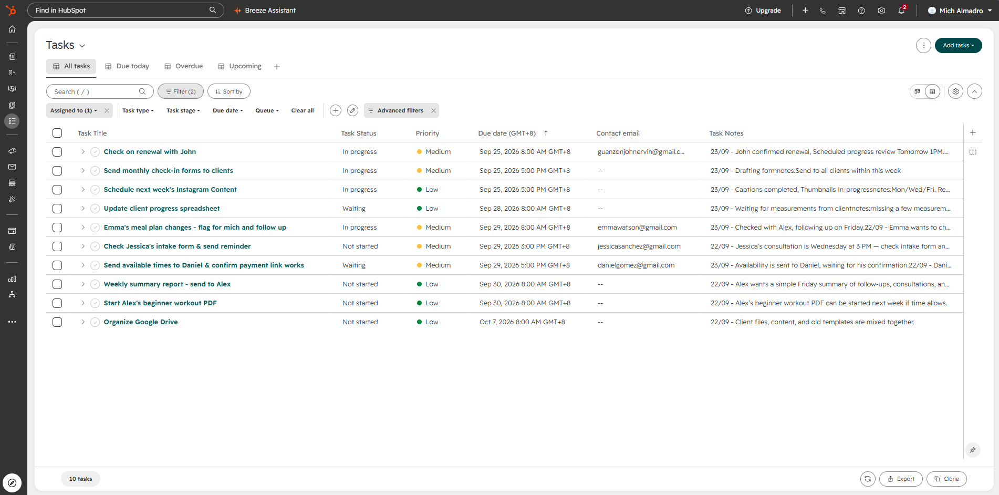
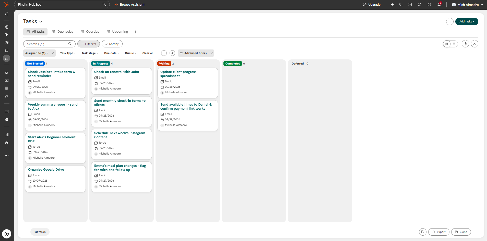
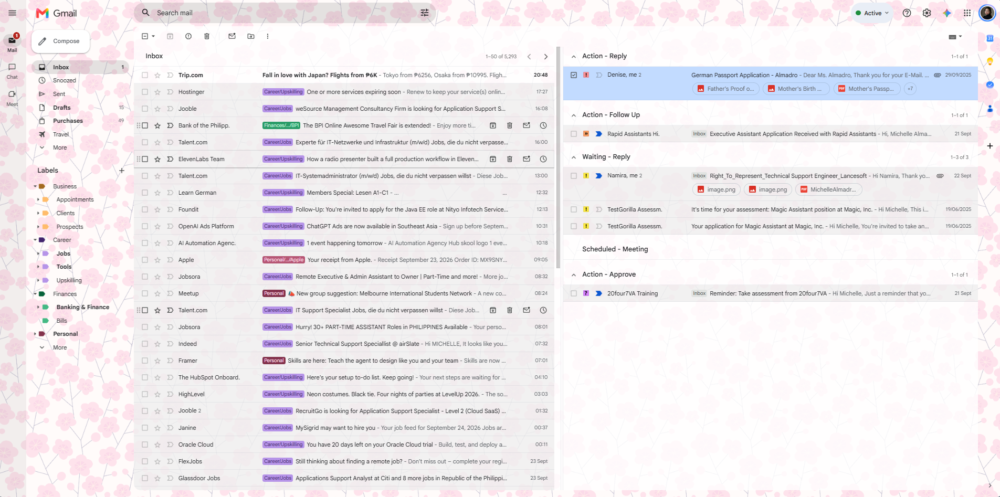
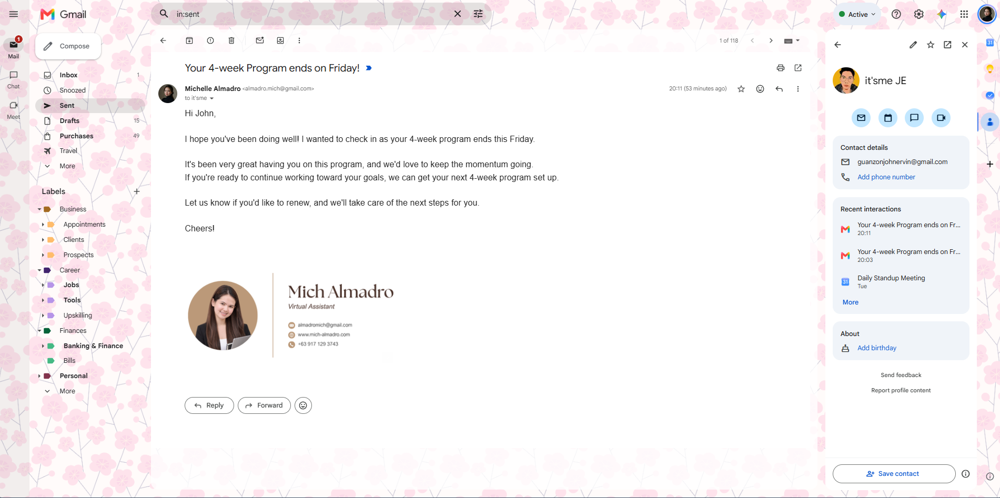
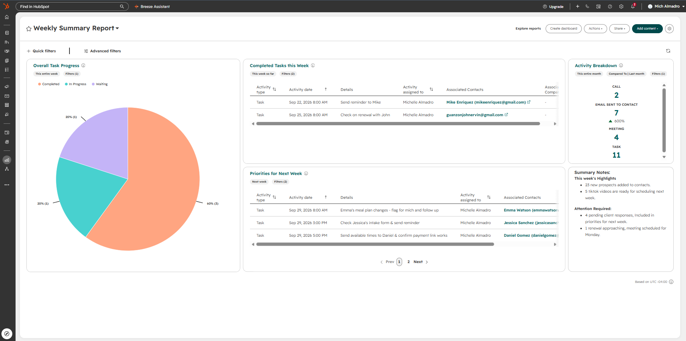
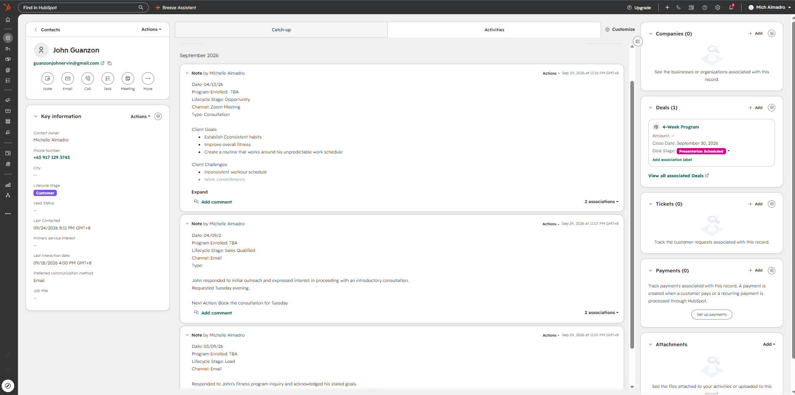

FROM SCATTERED TASKS TO CLEAR NEXT STEPS
Task & Workflow
Organization
Turning scattered tasks into a clear, trackable workflow.
The workflow
- Capture
- Prioritize
- Schedule
- Execute
- Follow Up
- Document & Report
01CAPTURE
Meeting Notes
A planning call becomes a clear list of actions.
Weekly Planning Call — Meeting Notes
Date: September 21, 2026
Attendees: Alex, Mich
- John’s 4-week program ends Friday — check on renewal + schedule progress review.
- Mike hasn’t sent weekly progress photos — send reminder tomorrow. His program ends next week, so mention renewal soon.
- Jessica’s consultation is Wednesday at 3 PM — check intake form and send reminder Tuesday.
- Daniel requested a consultation for next month — send available times and confirm payment link works.
- Emma wants to change her meal plan — flag for Michelle and follow up afterward.
- Update client progress spreadsheet — missing a few measurements.
- Next week’s Instagram content still needs scheduling — Mon/Wed/Fri. Reel is edited; caption + thumbnail needed.
- Check gym partnership invoice — payment was due last Thursday.
- Send monthly check-in forms to clients due this week.
- Alex’s beginner workout PDF can be started next week if time allows.
- Organize Google Drive — client files, content, and old templates are mixed together.
- Alex wants a simple Friday summary of follow-ups, consultations, and pending tasks.
02ORGANIZE
Task Management
Task Tracker
- Task prioritization
- Deadline tracking
- Follow-up coordination

FROMScattered action items
TOPriorities, deadlines, and next actions in one tracker.
Task Board
A board view groups work into Not Started, In Progress, Waiting, Completed, and Deferred.

FROMA mixed list of open tasks
TOWork grouped by status, with pending items easy to spot.
03COMMUNICATE
Email Management
Inbox Organization
Gmail labels and action groups keep messages organized and next steps visible.

FROMMessages competing for attention
TOLabeled conversations and clear action groups.
Follow-ups
A renewal follow-up with a friendly reminder and clear next steps.

FROMAn approaching renewal deadline
TOA timely reminder with a clear next step.
04REPORT
Documentation & Reporting
Weekly Summary Report
A weekly overview of task progress, completed work, upcoming priorities, and items needing attention.

FROMProgress spread across individual activities
TOOne view of completed work and upcoming priorities.
Client Documentation
Client interactions, goals, and next actions recorded in HubSpot for clear follow-through.

FROMClient details scattered across conversations
TODated notes with goals and next actions in one record.
THE RESULT